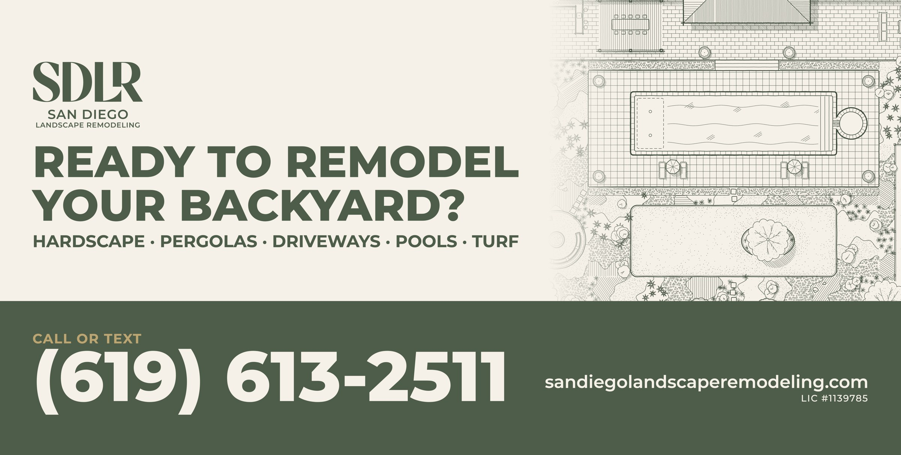
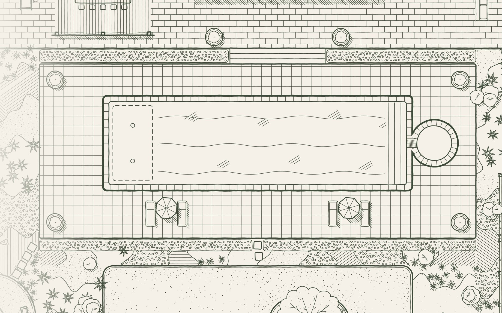
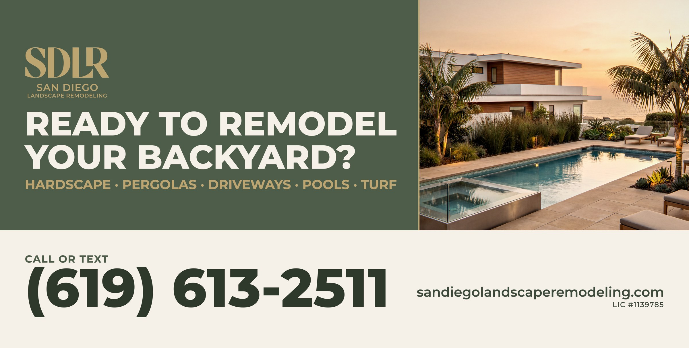
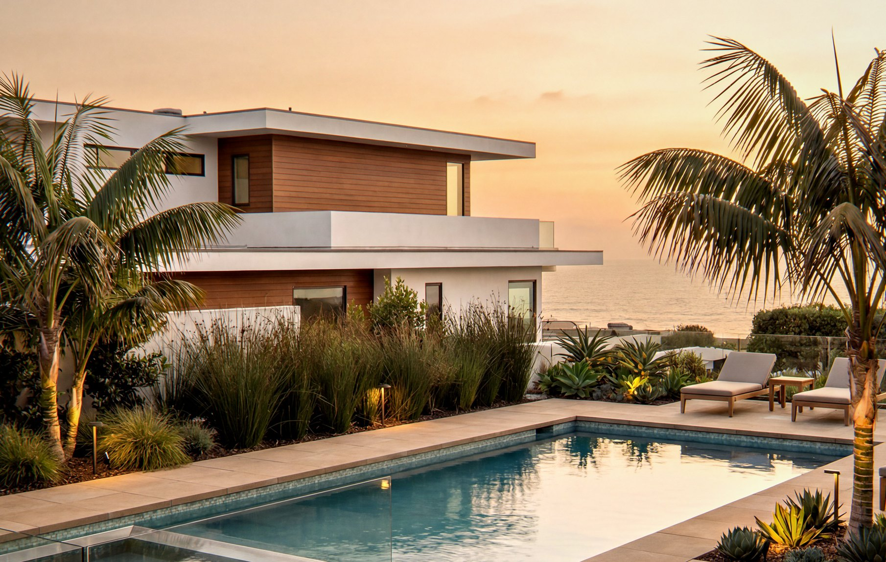
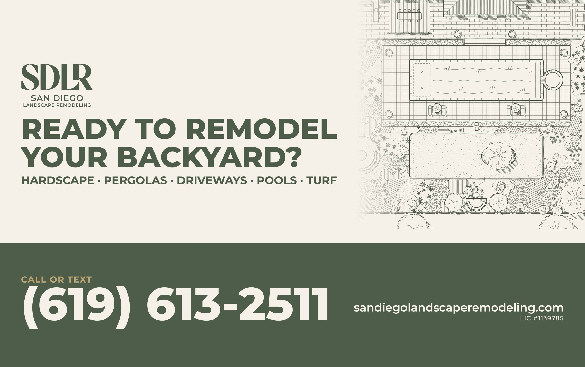
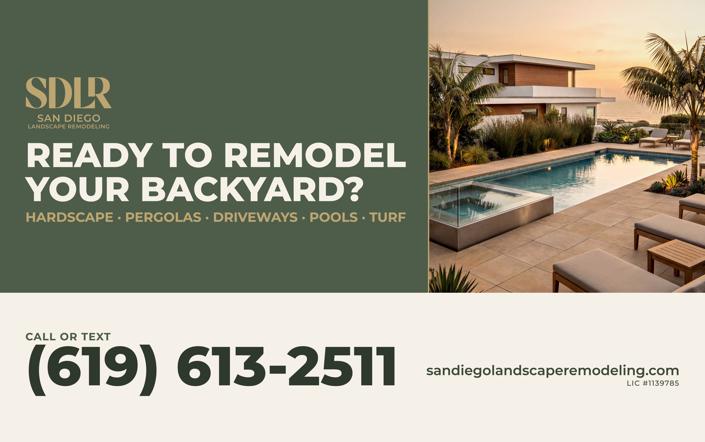

The approved yard sign's message and type, stretched to 8 × 4 feet, with real artwork in the corner. Two versions: one carries our pen-and-ink backyard plan, the other a coastal pool photograph. Both use the same layout: logo, the question, five services, then the number in its own band.




Option A. Cream stands out against a fence, where the green face can blend into hedges. The drawing is perfectly sharp at 8 feet, and nobody will mistake it for the house behind the fence. Option B grabs more attention from a moving car; pick it if that matters more.
| Phone number | Capital letters 5.3 in tall. Reads comfortably from about 50 ft. |
| Headline | 3.3 in. Reads from about 33 ft. |
| Services | 1.3 in. Reads from about 13 ft (walking past). |
| Website | 1.3 in. Walking past. |
Rule of thumb: one inch of letter height reads comfortably at ten feet.
| Finished size | 96 × 48 in (8 × 4 ft). A 96 × 60 in (8 × 5 ft) version is also ready. |
| File | Vector PDF, 97 × 49 in: 0.5 in of bleed on every side. Fonts embedded. A 100 dpi PNG is in the Drive folder for shops that want an image. |
| Material | Mesh vinyl (it lets wind through, which matters on a fence). Hemmed edges, grommets every 2 ft. Zip ties to the fence. |
| Safe area | All words are at least 2.4 in inside the edge, clear of hems and grommets. |
| Colors | Sage #4E5D4A, gold #BDA572, paper #F5F1E8. No Pantone numbers are assigned yet: ask for a printed proof and check the sage does not go grey or the gold brassy. |
| Type | Montserrat ExtraBold / Bold, same as the approved yard sign. |
The 8 × 5 ft PDFs, the 100 dpi PNGs and the generator are in Drive under
02 Clients/san-diego-landscape-remodeling/assets/print-ready/fence-banner/.

